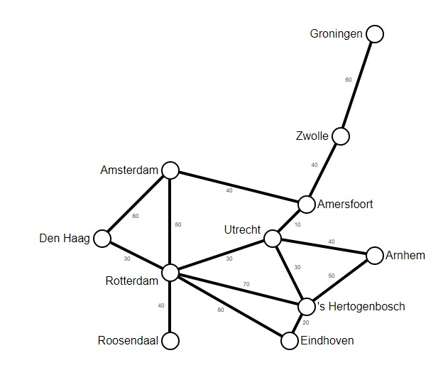
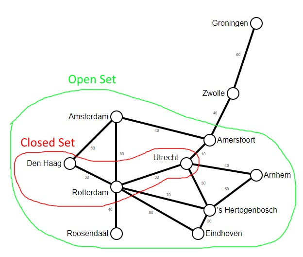
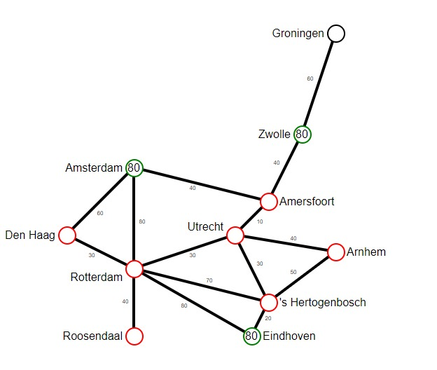
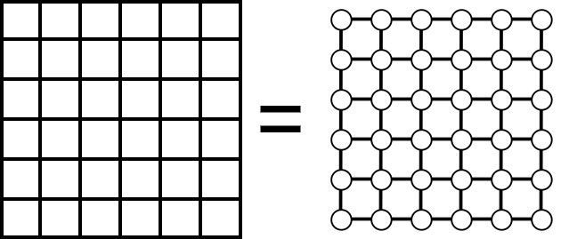
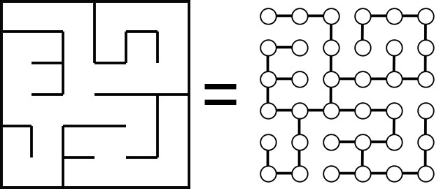
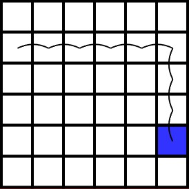

Put simply, a pathfinding algorithm is an algorithm which finds the shortest path between two points on a graph.
A graph is a collection of nodes (or vertices), connected by edges.
A network is a special type of graph where the edges have weights.
Nodes and edges are a way of representing a problem, and can mean whatever we want.
Edsger Dijkstra was a Dutch mathematician in the 1950s. One day, he was in a cafe in Amsterdam, when he thought to himself:
What's the fastest way to get from Rotterdam to Groningen?
He had the idea of turning the Dutch train network into a mathematical network, with nodes representing stations and edges representing train routes. The weight of each edge was the travel time between the stations.

He then used this network to eventually come up the following algorithm:
Start at Rotterdam
Imagine simultaneously travelling on every train out of Rotterdam
When you get to a station, imagine travelling out of that station on every train
Repeat until a train gets to Groningen
Work out where it came from
To solve this computationally, we take the network, and definte two sets of nodes: the open set and the closed set.
The closed set is everywhere we have been (initially just Rotterdam), and the open set is everywhere which is one
train away from a node in the closed set. There may be stations which are in neither set.
For example:

We look through every node in the open set, and assign it a travel time. Since every open node is one train away
from a closed node, the travel time is equal to the travel time of the closed node, plus the length of the train
journey between them.
Example 1: The travel time of Den Haag = travel time of Rotterdam (0) + travel time between Rotterdam and Den Haag
(30) = 30 minutes
Example 2: The travel time of Amersfoort = travel time of Utrecht (40) + travel time between Utrecht and Amersfoort
(10) = 50 minutes
For each open node, we also keep track of the train we used to get there. This allows us to retrace our steps once
we get to Groningen to find the actual route.
Dijkstra's algorithm chooses the open node with the shortest travel time, and adds it to the closed set. It then
finds any stations which are now one train away from the new node, and calculates the travel time for all adjacent
nodes, repeating until the target is reached.
- It always finds the shortest path - It works on any graph with non-negative weights
- It uses a computationally-intensive brute force approach - It explores many nodes which do not get it closer to the target
Dijkstra's algorithm is greedy - it doesn't consider the big picture, and just tries to find the next shortest path in the short term. It doesn't even know where Groningen is until it gets to Zwolle! This is why it ends up exploring the entire network, including towns like Roosendaal that don't get it any closer to Groningen.
We can prevent this using a function known as a heuristic. When we have multiple options, the heuristic will give us a rough idea of which option is best. It doesn't need to be perfect, it just needs to point us in the right direction.
Consider this scenario:

There are 3 open nodes: Amsterdam, Eindhoven and Zwolle. Which one should we discover next?
So far, we've been giving each node a travel time.
This is called a cost, and we use it to choose the best node.
In Dijkstra's algorithm, the cost is calculated by the total travel time, or the distance from Rotterdam to that
node.
From now on, we will refer to this "distance from start" cost as the G-cost.
We will now introduce a new cost called the H-cost, and this will represent the
distance from the node to Groningen. The H stands for heuristic, since we don't actually know the exact travel time
left. (If we did, we would already know the shortest path!)
We've established that a good heuristic would be distance. That way, the algorithm is rewarded for going towards
Groningen, and straying from the best path would punish it twice.
To calculate this, I'm going to measure the distance from Groningen to every station in our network:
| Station: | Distance from Groningen (in kilometres): |
|---|---|
| Arnhem | 140 |
| Amersfoort | 140 |
| Amsterdam | 140 |
| Den Haag | 200 |
| 's Hertogenbosch | 190 |
| Eindhoven | 210 |
| Groningen | 0 |
| Roosendaal | 230 |
| Rotterdam | 200 |
| Utrecht | 160 |
| Zwolle | 80 |
However, there's a problem with this. The H-cost is measured in km, but the G-cost is measured in minutes. Ideally,
the G-cost and H-cost should be measured in the same units, or the algorithm would favour one more than the
other.
The G-cost of the starting node is 0, because we have travelled no distance, and the H-cost of the target node is
also 0, because we have no distance yet to travel. We can use this fact to calibrate our distances such that the
H-cost of the starting node, (the distance we have to travel), is the same as the G-cost of the target node, (the
distance we actually travel).
Since we have already found the G-cost of Groningen is 140 minutes and the distance to Rotterdam is 200km, we can
multiply all of our distances by 1.43, the ratio of these numbers. This does kind of defeat the point, since we need
to find the G-cost of the target, but we can now use this constant for all other journeys on this network.
(Fun fact: Since the constant is equal to 200 kilometres divided by
140 minutes, we get a number in kilometres per minute,
which is the average speed of the train!)
| Station: | H-cost (in minutes): |
|---|---|
| Arnhem | 100 |
| Amersfoort | 100 |
| Amsterdam | 100 |
| Den Haag | 140 |
| 's Hertogenbosch | 130 |
| Eindhoven | 150 |
| Groningen | 0 |
| Roosendaal | 160 |
| Rotterdam | 140 |
| Utrecht | 110 |
| Zwolle | 60 |
We are now almost ready to implement the A* pathfinding algorithm! We just need to learn 1 more term:
The F-cost is simply equal to the G-cost plus the H-cost. While Dijkstra's algorithm
finds the path with the smallest G-cost, the A* algorithm finds the path with the smallest F-cost.
So far we've looked at Dijkstra and A* pathfinding on the Dutch rail network, but these algorithms work on any network. In fact, the majority of A* applications are on a grid-based system.

If you think about it, a grid is just a network, where each square is a node, and there are edges between adjacent squares. If you want to include diagonals, you simply add edges between diagonal squares, with a weight ~1.4 times the weight of the orthogonal edges. But for simplicity, we will only allow orthogonal movement, and each edge will have a weight of 1.
A maze is arguably even simpler than a grid. We simply remove edges between squares with walls between them, so the algorithm cannot go over the wall.

We can calculate the H-cost as the manhattan distance between two squares, since this is the distance away if there were no walls. If the target is 3 squares down and 5 squares to the right of our current square, the H-cost is 3 + 5 = 8.

Combining all this with our existing A* algorithm, we get this:
Click on a square to set it as the target. This will then calculate all the H-costs.
Then, you can press Calculate travel times to step through the algorithm, or press Solve automatically to do
that.
Press Reset maze to generate a new maze. You will then need to click on a target again.